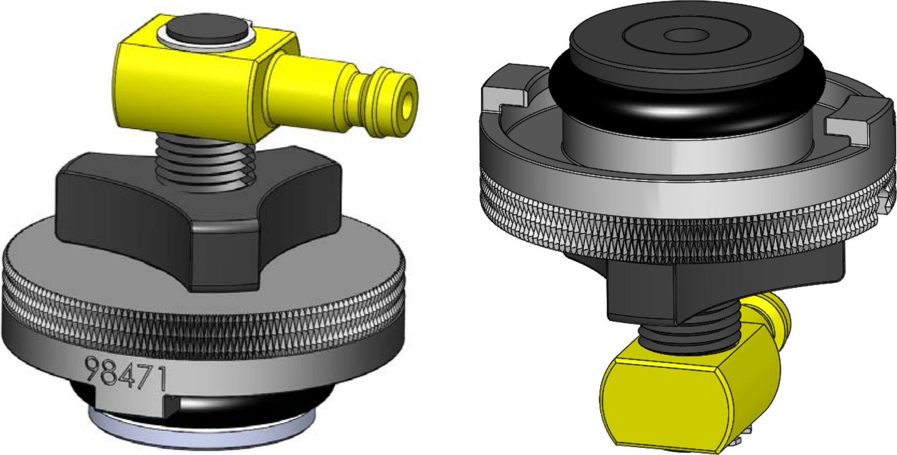

Doc no. MOC-TSB-16-08 // Vol. 16 No. 08 // May 10, 2016 // Brake
Chevy 2 Tab Brake Adapter
New98471
MOC has developed a new 2 Tab Brake Adapter for use on Chevrolet Spark gasoline vehicles (2013-2015) (Part No. 98471). This adapter may also fit other GM models.
What's new
Contact
For more information, contact the Machine & Equipment Department at 866.244.6621.

Part numbers
| Part No. | Description | Notes |
|---|---|---|
| 98471 | Adapter, Brake, Chevy 2 Tab |